Gyeongsang National University · Dept. of Geology
경상국립대학교 지질과학과
GNU Geophysics Laboratory
신영재 Shin Youngjae
shin542@gnu.ac.kr
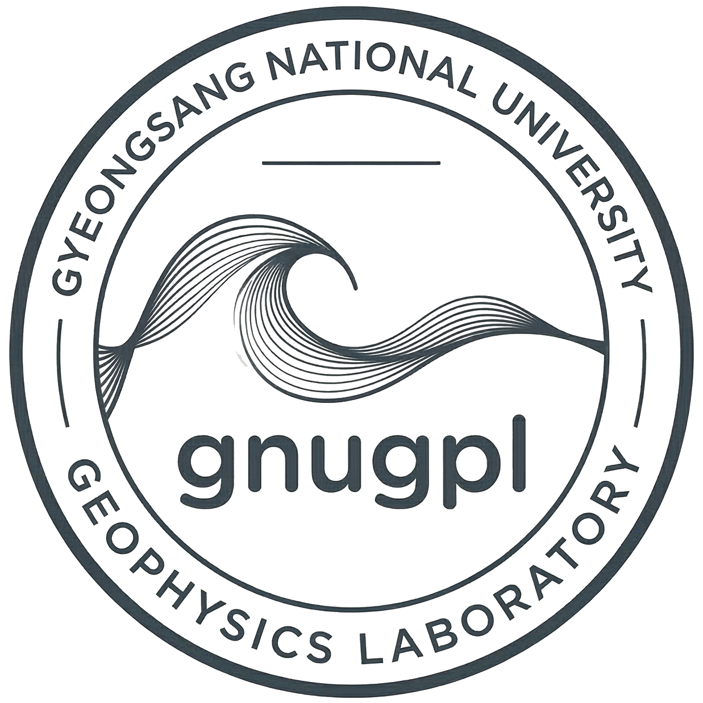
지구의 CT 촬영
병원에서 CT로 몸속을 보듯이,
물리학의 원리로 땅속을 들여다보는 학문입니다.
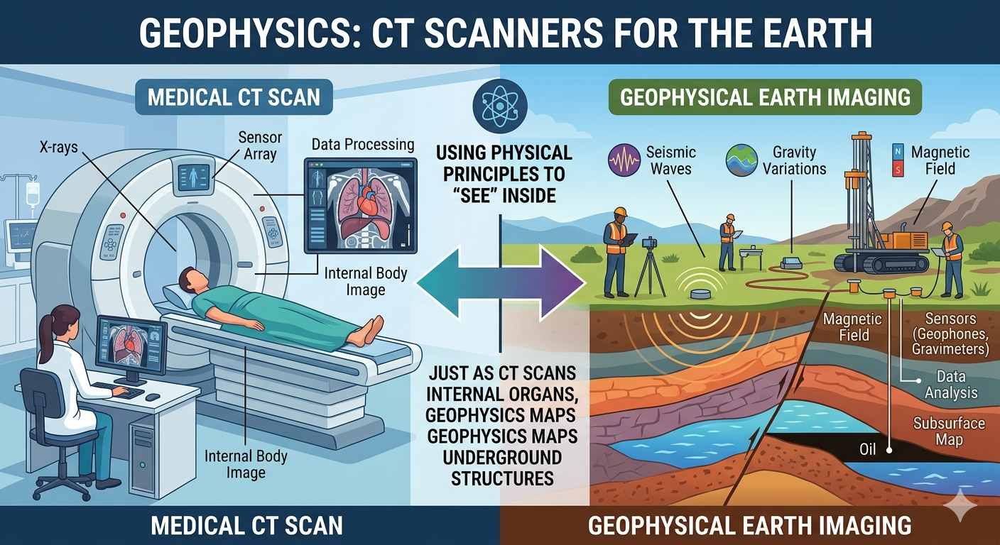
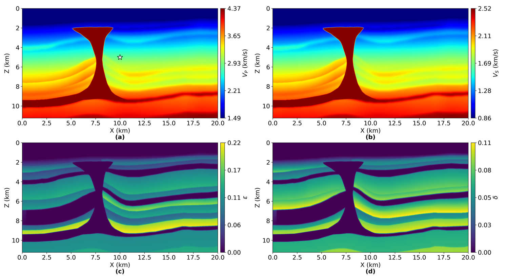
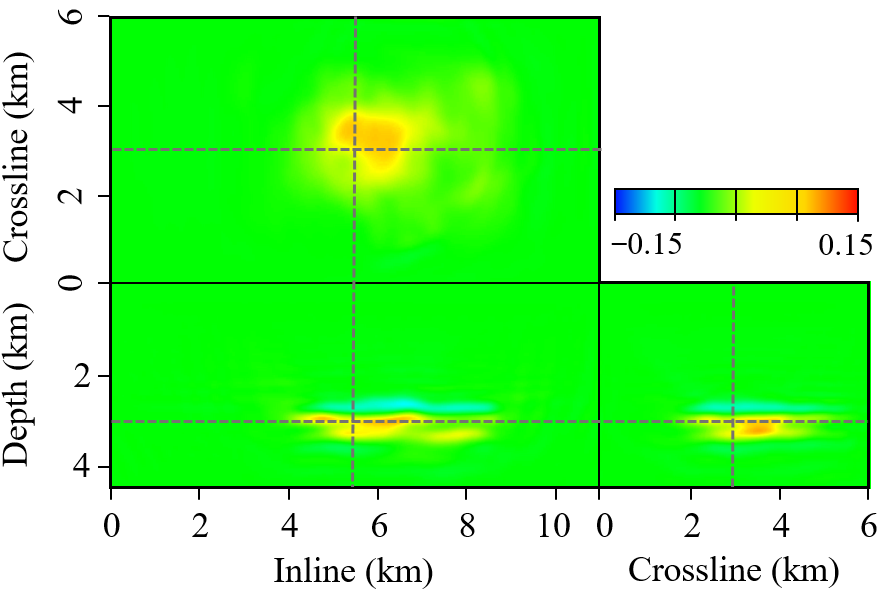
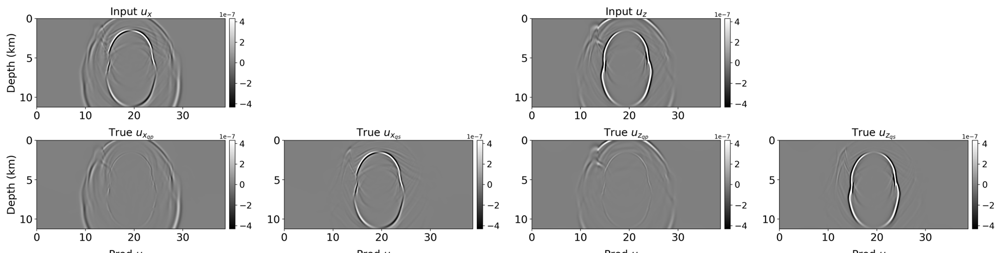
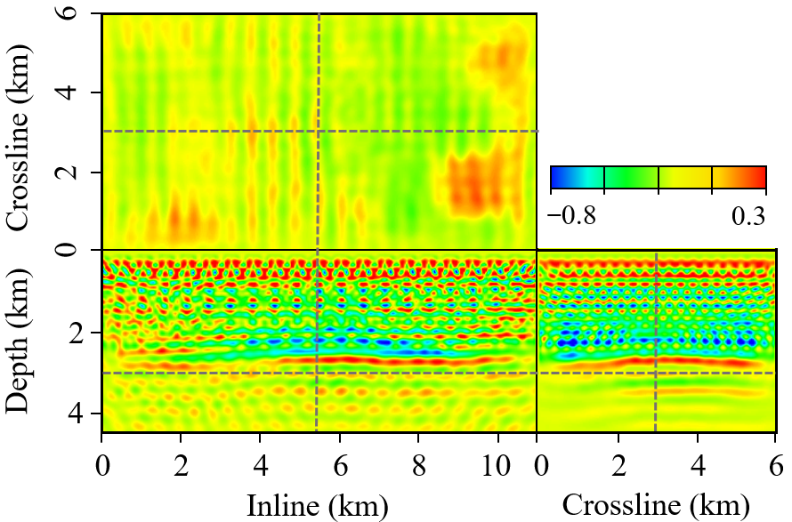
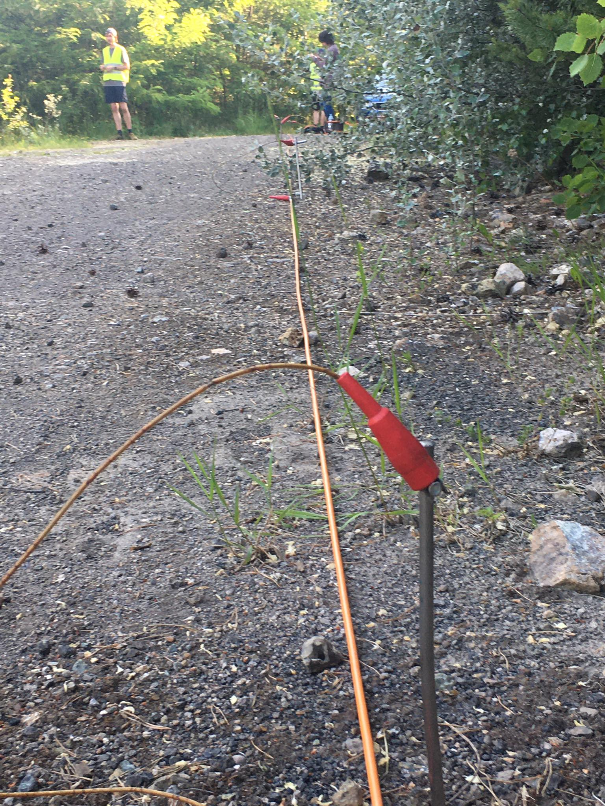
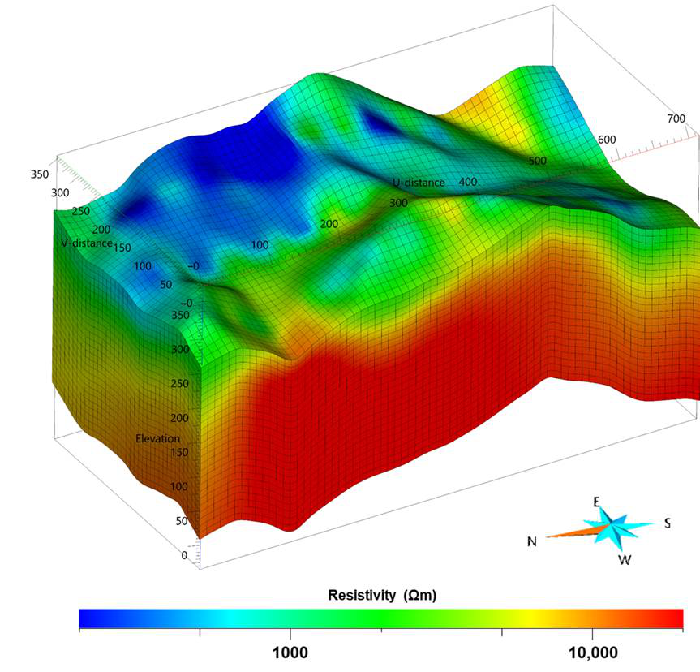
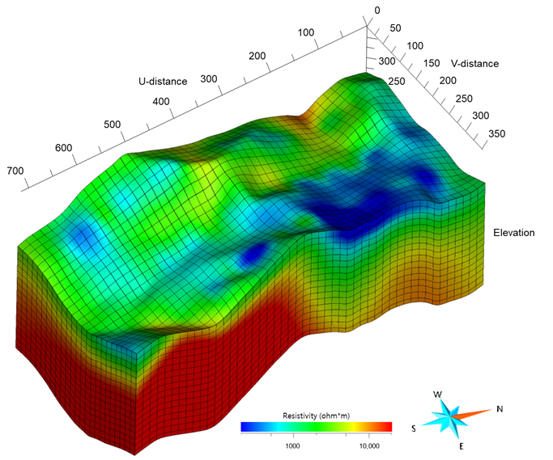
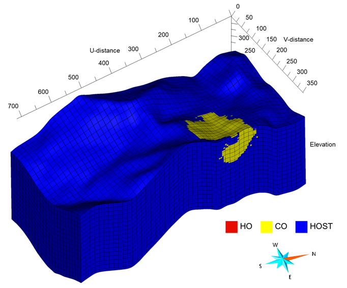
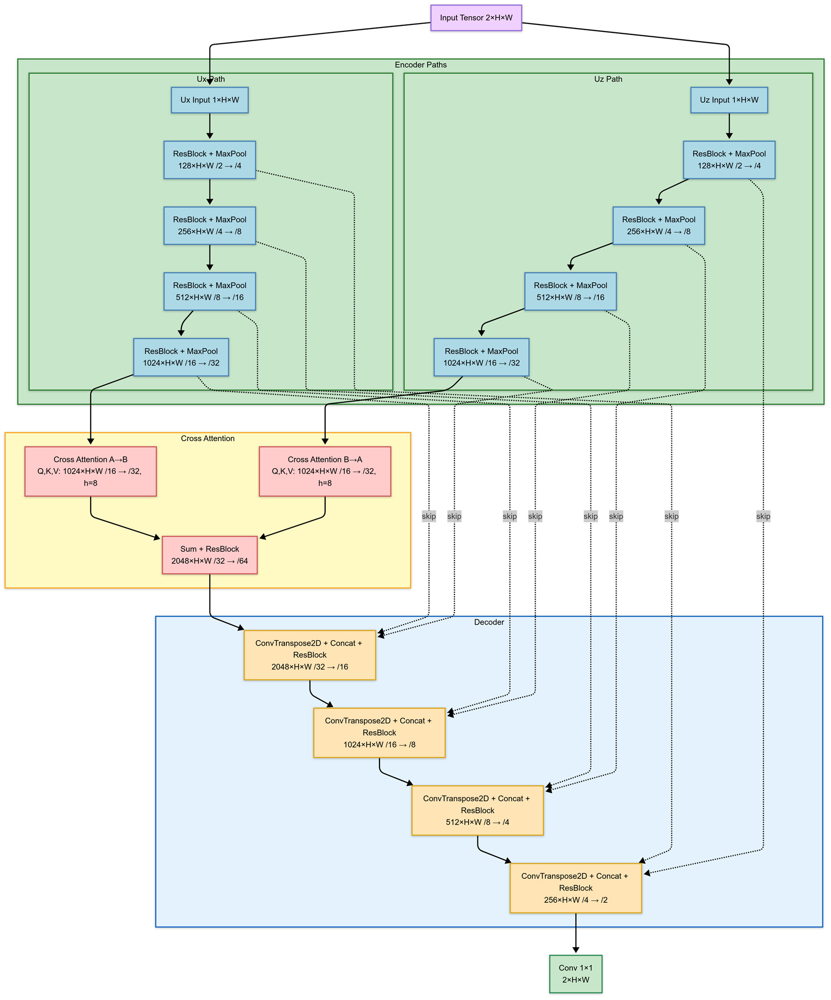
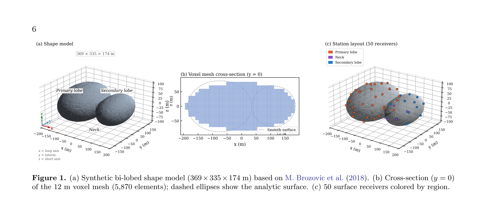
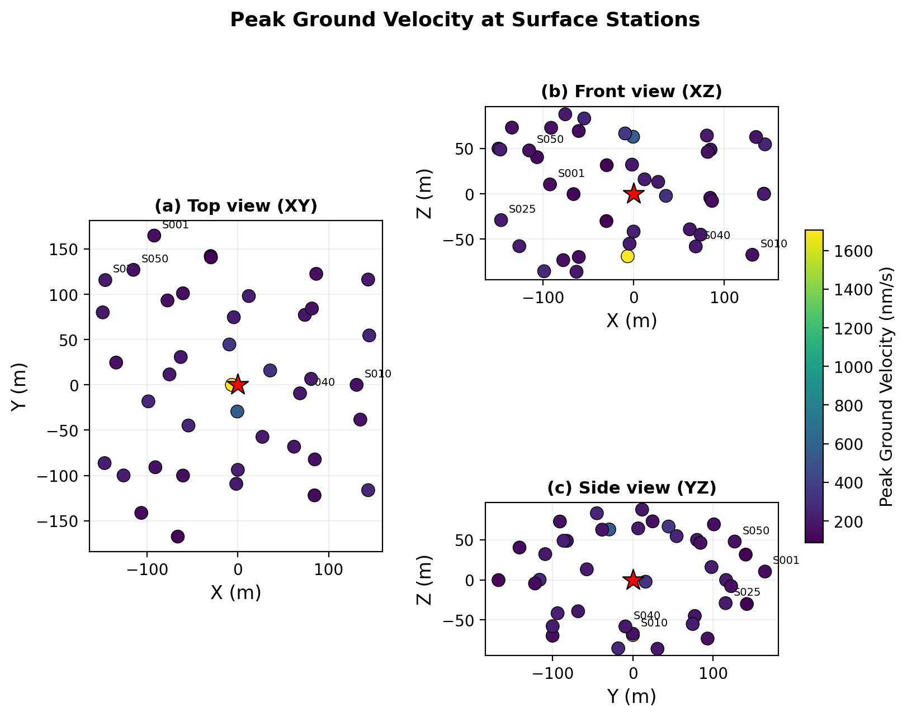
석사 / 박사 과정 학생 모집 중